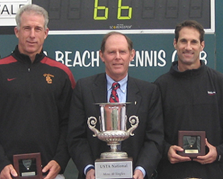

← Bài trước: Breathing and the Mental Game | 🏠 Mental Game Trang chủ | Bài tiếp: → Choking, Yes, Even in the U.S.Open Final
Cầu nối khe hở kỹ thuật và tâm lý: Thực hiện thay đổi kỹ thuật dưới áp lực
Thư viện kiến thức quần vợt thống nhất toàn diện — Cơ bản, Phân tích kỹ thuật, Thư viện tham khảo và nhiều hơn nữa
Cầu nối khe hở kỹ thuật và tâm lý: Thực hiện thay đổi kỹ thuật dưới áp lực
Jeff Greenwald
Làm thế nào để áp dụng những thay đổi kỹ thuật trong thi đấu?
Trong huấn luyện quần vợt, có một khoảng cách giữa kỹ thuật và tâm lý. Có phát triển kỹ thuật và có tâm lý thi đấu. Chúng ta cho rằng cả hai khía cạnh đều quan trọng, nhưng phải phát triển chúng một cách riêng biệt.
Nhưng mối quan hệ thực sự giữa kỹ thuật và tâm lý là gì? Cụ thể, làm thế nào để thực hiện những thay đổi kỹ thuật dưới áp lực tâm lý? Câu hỏi này hiếm khi được khám phá. Nhưng quá trình này là chìa khóa quan trọng để bạn phát triển và khai thác tiềm năng tốt nhất của mình.
Trong bài viết này, tôi sẽ giải thích cách chúng ta có thể tạo ra một sự tổng hợp giữa những thay đổi kỹ thuật và quá trình tâm lý để thực hiện chúng, dựa trên các nguyên tắc nghiên cứu trong lĩnh vực tâm lý thể thao.
Tôi đã chứng minh cho chính mình cách quá trình này có thể quan trọng và mạnh mẽ như thế nào (và không phải lần đầu tiên) khi, chỉ ba ngày trước khi thi đấu National 40's Hardcourts, tôi quyết định thực hiện một số thay đổi kỹ thuật trong động tác giao bóng của mình.
Theo quan điểm thông thường, quyết định này có thể gây chết người. Nhưng kết quả thực tế lại rất tích cực. Tôi đã giành chiến thắng trong giải đấu và những cải tiến trong cú giao bóng của tôi đã đóng vai trò quan trọng.

Những thay đổi tôi tích hợp vào cú giao bóng đã tạo ra quả bóng vàng ở LaJolla.
Bài viết này kể câu chuyện về cách điều đó xảy ra. Nó phần lớn là câu chuyện về những gì tôi đã thay đổi, nhưng quan trọng hơn, câu chuyện về cách tôi thực hiện những thay đổi đó, một quá trình mà bất kỳ tay vợt nào cũng có thể học để áp dụng cho bất kỳ cú đánh nào.
Quyết định
Bối cảnh câu chuyện như sau. Trong một số tuần chuẩn bị cho National 40's ở La Jolla, California, tỷ lệ giao bóng đầu tiên của tôi đã dưới 50%, ngay cả trong luyện tập.
Ý tưởng phải thi đấu trong một giải đấu quốc gia lớn dưới những điều kiện như vậy khiến tôi ngày càng bất an. Phải giành được nhiều điểm hơn trên giao bóng thứ hai và/hoặc phải phá giao bóng nhiều hơn thường xuyên là những thách thức tôi muốn tránh nếu có thể.
Ban đầu, tôi đã cố gắng tăng cường luyện tập giao bóng, đánh nhiều giỏ bóng. Nhịp điệu và tỷ lệ của tôi đã cải thiện, nhưng sau đó trong một giải đấu ấm lên, giao bóng đầu tiên của tôi lại biến mất.
Trong tuần trước LaJolla, tỷ lệ giao bóng đầu tiên của tôi đã dưới 50%.
Vấn đề giao bóng chủ yếu là vấn đề tâm lý? Ít nhất một phần nó đã trở thành như vậy, vì tôi đã mất tự tin vào khả năng giao bóng mà tôi muốn khi cần thiết nhất.
Nhưng thực tế là động tác vật lý đơn giản không cảm thấy đúng. Nếu tôi muốn tăng cường tự tin trong những tình huống áp lực, tôi biết mình phải điều chỉnh động tác vật lý trước tiên.
Bước đầu tiên là phát triển sự hiểu biết kỹ thuật về lý do tại sao giao bóng của tôi đang bị suy giảm. Vì vậy, tôi đã gọi điện thoại cho bạn tôi John Yandell và hỏi anh có thể mang một trong những máy quay video của anh đến Harbor Point ở Mill Valley, California, câu lạc bộ quần vợt ở Marin County nơi chúng tôi đều là thành viên không.
John đã đặt câu hỏi rõ ràng về ý tưởng này ngay trước giải đấu. Tôi đã nói với anh rằng ngay cả khi tôi chỉ còn ba ngày nữa trước giải đấu, tôi cũng không có gì để mất. Tôi có thể bỏ qua kế hoạch mới nếu nó không hoạt động.
Hai xu hướng: quá nhiều uốn cong ở eo và giảm kick back.
Tôi cũng nói với anh rằng nếu chúng tôi tìm ra phân tích đúng, tôi cảm thấy tự tin về khả năng thực hiện thay đổi đó, dựa trên những kinh nghiệm trước đây và các kỹ thuật tôi đã phát triển trong công việc tư vấn tâm lý thể thao của mình. Vì vậy, John đồng ý tham gia và thử nghiệm bắt đầu.
Khi chúng tôi quay động tác, chúng tôi nhanh chóng đồng ý về phân tích. Chúng tôi đều cảm thấy rằng không có vấn đề gì với đường đi của vợt hoặc hình dạng của cú đánh. Tuy nhiên, có một số yếu tố khác cần điều chỉnh một phần.
Chúng tôi nhận thấy đầu tiên là tôi đang đứng không cân bằng, quá uốn cong ở eo. Chúng tôi cũng nhận thấy rằng tôi đã mất một phần phần mở rộng trong cú kick lùi với chân phải. Tại điểm tiếp xúc, chúng tôi thấy rằng vai của tôi hơi mở ra so với baseline, so với những tay vợt hàng đầu.
Vậy thì bắt đầu từ đâu? John đề nghị tôi đóng góc của chân trước trong thế đứng bắt đầu, mà hiện tại tôi đang ở khoảng 45 độ so với baseline. Chúng tôi quyết định làm cho nó song song hơn, xoay chân sao cho móng chân của tôi trỏ nhiều hơn về phía đường biên. Chúng tôi cũng hẹp hơn thế đứng và mở góc của chân sau, xoay nó hơi xa khỏi baseline.
Một thay đổi trong góc của chân và một cú uốn cong hơi sâu hơn của gối.
John tin rằng điều này sẽ tạo ra nhiều xoay chuyển cơ thể trong động tác, cải thiện góc vai tại điểm tiếp xúc và mang lại cho tôi nhiều sức mạnh tự động hơn. Chúng tôi cũng thử nghiệm với việc sâu hơn cú uốn cong của gối. Ý tưởng của chúng tôi là có lẽ tôi đã quá phụ thuộc vào bàn tay và cánh tay đi để giao những quả bóng lớn và điều này đã góp phần vào sự không nhất quán của tôi.
Để thực hiện tất cả những điều này, chúng tôi đã thực hiện một bài tập gọi là "hoppity hop", buộc tôi phải kick chân của mình xa hơn phía sau và đứng thẳng hơn với cân bằng tốt hơn.
Khi tôi bắt đầu chơi các điểm luyện tập, chúng tôi đều hào hứng khi tìm thấy tôi đã tích hợp những thay đổi dần dần này ngay lập tức - và có sự thay đổi đáng chú ý trong cách bóng trông và cảm thấy khi đến từ vợt của tôi.
Bài tập "hoppity hop": một bài tập tuyệt vời để cải thiện cân bằng khi đứng.
Mặc dù những thay đổi này có thể xuất hiện đáng kể, nhưng điểm quan trọng đối với tôi là tôi không cảm thấy rằng chúng là không thể quản lý nếu tôi sử dụng sự tập trung và chú ý của mình một cách đúng đắn. Và đây là một khóa quan trọng mà tất cả các tay vợt phải giải quyết - biết cách thực hiện thay đổi, nhưng cũng không nên tự mình tích hợp quá nhiều hơn những gì bạn thực sự cảm thấy có khả năng.
Thú vị là thế đứng pinpoint - thứ mà chúng tôi chưa thảo luận - tự nhiên biến đổi thành một nền tảng cổ điển theo phong cách Roger Federer và Pete Sampras. Điều đó thật thú vị vì đó không phải là điều gì chúng tôi đã xác định là một vấn đề hoặc tìm kiếm để thay đổi.
Cũng thú vị là cách thế đứng thay đổi lại như tôi luyện tập những thay đổi khác. Điều này đã trở thành một điểm quan trọng khác trong việc quản lý quá trình - nhưng tôi sẽ nói thêm về điều này sau.
Khi chúng tôi làm việc, tôi cảm thấy tự tin của mình tăng lên. Đánh bóng ra khỏi giỏ và chơi các điểm luyện tập, rõ ràng là những thay đổi chúng tôi thực hiện có thể tạo ra kết quả chính xác mà tôi đang tìm kiếm nếu tôi có thể tích hợp chúng và sử dụng chúng tại National.
Những thay đổi tôi biết sẽ tạo ra sự khác biệt tại National.
Từ lý thuyết đến thi đấu
Câu hỏi là: làm thế nào để thực hiện điều này? Bạn thực sự làm gì để tích hợp những thay đổi kỹ thuật tích cực?
Tôi nghĩ nhiều tay vợt bị nhầm lẫn về điều này, hoặc liệu họ có nên nghĩ về kỹ thuật trong các trận đấu không. Và có những lý do tốt cho điều đó. Phân tích bằng lời nói liên quan đến nửa não trái lý tính là không tương thích với trạng thái "zone" hoặc "flow" mà chúng ta đều tìm kiếm trong thi đấu.
Nhưng nếu bạn không thể nghĩ về nó một cách nào, làm thế nào bạn có thể thực hiện thay đổi kỹ thuật trong thi đấu? Đây là giải pháp. Những lời khuyên kỹ thuật cần được xử lý và tinh luyện thành hình ảnh và/hoặc cảm giác vật lý của nửa não phải.
Hình ảnh và cảm giác vật lý đi kèm với chúng có thể truyền tải thông tin kỹ thuật đến phía não phải của trạng thái flow, bỏ qua nhu cầu phải phân tích bằng lời nói. Hãy cho tôi giải thích cách điều này hoạt động cho tôi trong sự nóng nảy của thi đấu.
Đường sắp xếp và chuyển đổi từ trái sang phải não.
Giải đấu National
Tôi đang thi đấu trong trận chung kết của National 40 Hardcourts ở La Jolla. Tôi đang thi đấu với Peter Smith, người đã giành chiến thắng ba lần và là huấn luyện viên quần vợt đại học nam USC, một tay vợt thành công và cũng là một nhà đóng góp cho Tennisplayer. (Nhấp vào đây để đọc bài viết của Peter.)
Tôi đi từ sân sau lên baseline để giao bóng. Mắt tôi bắt gặp một khán giả bên phải. Chậm rãi và có hệ thống, tôi sắp xếp chân trước của mình song song với baseline. Tôi không thể tránh khỏi sự nhầm lẫn trên khuôn mặt của khán giả này. Một tay vợt nào trong trận chung kết của National lại tiếp cận giao bóng như một người mới? Nhưng vẻ ngoài có thể lừa dối.
Đúng là khi tôi sắp xếp chân trước của mình song song với đường baseline - như khán giả hiếu kỳ đã chú ý - đây là một khoảnh khắc của não trái. Tôi đang căn chỉnh cơ thể của mình theo cách mà John và tôi đã phát hiện ra sẽ tự động tăng xoay chuyển cơ thể và cuộn xoắn.
Nhưng đây cũng là nơi bắt đầu chuyển đổi sang phía não phải, bên kia. Sau khi sắp xếp xong, tôi có một hình ảnh ngắn về cơ thể của mình vẫn đứng thẳng khi tiếp xúc, tưởng tượng cách cảm giác này thực sự như thế nào. Quá trình này không mất quá 1-2 giây.
Sau khi sắp xếp xong, hình ảnh về việc đứng thẳng.
Nói cách khác, những gì tôi đang làm là "gọi lên" cảm giác và hình ảnh của một lời khuyên kỹ thuật rất cụ thể. Quá trình này đơn giản, nhanh chóng, không bằng lời nói. Sau một thời gian, nó trở nên tự động.
Điều này cũng có thể là hình ảnh của cú uốn cong gối sâu hơn một chút. Hoặc hình ảnh của chân sau kick lùi. Bất kỳ điều gì chúng tôi đã làm. Thực tế, trong suốt giải đấu, mỗi hình ảnh này đã lặp lại trong tâm trí tôi dựa trên những gì tôi cảm thấy mình cần trong khoảnh khắc khi quản lý những thay đổi tôi đã thực hiện trong động tác của mình.
Nhưng có một điểm quan trọng hơn - quá trình này không chỉ liên quan đến những thay đổi với giao bóng của riêng tôi. Quá trình này có thể hoạt động cho bất kỳ tay vợt nào cho hầu hết các cú đánh trong phạm vi rộng của các cú đánh.
Nhưng hãy cẩn thận. Có một bẫy đang chờ bạn. Một khi hình ảnh trực quan được xử lý, nhiều tay vợt cố gắng quá nhiều để thực hiện cú đánh thực sự. Và chúng ta biết rằng suy nghĩ quá mức trong các trận đấu thường dẫn đến sự tê liệt. Hãy rõ ràng. Những từ khuyên kỹ thuật và/hoặc hình ảnh của kỹ thuật trong thi đấu nên được giữ ở mức tối thiểu. Nhưng khi bạn sử dụng não phải để xử lý điều này nhanh chóng với sự tập trung vào hình ảnh, bạn có thể thực hiện những thay đổi với rất ít nỗ lực.
Thế đứng pinpoint tự nhiên của tôi tái xuất hiện: đó có phải là một vấn đề không?
Một ví dụ khác là những gì đã xảy ra với thế đứng của tôi. Khi John và tôi đầu tiên làm việc trên vị trí bắt đầu và cú uốn cong gối của mình, để kinh ngạc của chúng tôi, chúng tôi thấy thế đứng pinpoint của tôi thay đổi thành một nền tảng, như một hậu quả không mong muốn. Tuy nhiên, trước giải đấu, thế đứng pinpoint tự nhiên của tôi lại xuất hiện - lại không có bất kỳ nhận thức nào về mặt ý thức của tôi.
Tôi có thể để điều đó trở thành một sự phân tâm lớn và bắt đầu tranh luận với bản thân mình về thế đứng nào tốt hơn, có nên thay đổi lại không, v.v. Sự tự nhiên của tôi đã cho rằng điều đó sẽ quá nhiều để xử lý trong những tình huống đó, và do đó chắc chắn là vô ích. Tranh luận đó sẽ làm mất đi những khóa tinh tế, không bằng lời nói mà chúng tôi đã phát triển, những khóa không liên quan gì đến thế đứng.
Để quá trình tôi đang nói đến hoạt động, sự tập trung của bạn phải rất hẹp để bạn có thể hoàn toàn hiện diện trong cơ thể của mình. Chìa khóa ở đây là giữ sự tập trung của mình về điều chỉnh bạn đang cố gắng thực hiện nhưng hoàn toàn hiện diện trong cơ thể của mình. Có thể có những vấn đề khác cần xem xét - hoặc không - nhưng trong thi đấu không phải lúc để xem xét.
Để đưa ra một ví dụ khác trong việc khóa giao bóng của tôi, tôi chỉ cần hẹp sự chú ý của mình về cú kick lùi của chân sau mà tôi dự định thực hiện khi tiếp xúc. Đây là điều mà John và tôi đã tìm thấy có hiệu quả ngay lập tức trong công việc ban đầu của chúng tôi. Nó giống như bạn đang chiếu sáng một phần của cơ thể mình mà không có bất kỳ suy nghĩ hoặc phân tâm nào khác.
Một hình ảnh khác tôi sử dụng thành công: chân sau kick lùi.
Sự tự nhiên của tôi đã cho rằng đây là một khóa tích cực, và ở xa khỏi bất kỳ phân tích sâu hơn về thế đứng mà tôi không thể xử lý theo cách đơn giản, không bằng lời nói như vậy.
Kết quả
Điều quan trọng là bạn không nên bị chiếm hữu hoặc bị phân tâm bởi kết quả và liệu quả bóng có đi vào hay ra. Điều này, đương nhiên, là dễ nói hơn làm. Nhưng chìa khóa là học, từng chút một, để thả lỏng và tập trung vào khoảnh khắc hiện tại. Bạn cần rất rõ ràng về mục tiêu cụ thể mà bạn có cho bất kỳ cú đánh nào bạn đang cố gắng cải thiện - ngoài việc thắng hoặc thua.
Tiếp theo, giữ sự tập trung của bạn về mục tiêu cụ thể đó và lặp lại quá trình cho đến khi nó trở nên cố định. Sự thật là có một cảm giác thoải mái khi có một lời khuyên kỹ thuật mạnh mẽ, liên quan và đơn giản trên những cú đánh cần một số "làm sạch" từ thời đến thời. Tôi đã sử dụng cùng một quá trình trên trò chơi trả giao bóng của mình, ví dụ. Khi bạn làm việc với quá trình này trong một thời gian, bạn cảm thấy như thể bạn có điều gì đó vững chắc để dựa vào, và điều này tạo ra sự tự tin.
Cùng một quá trình sẽ hoạt động trong trò chơi trả giao bóng của bạn hoặc cho bất kỳ vấn đề kỹ thuật nào.
Tập trung hơn
Dựa trên một lượng lớn nghiên cứu, chúng ta bây giờ biết rằng những vận động viên hàng đầu có khả năng hẹp sự tập trung của mình dưới áp lực và có một cảm giác rõ ràng về ý định của mình trong khoảnh khắc. Đối với tôi, hẹp sự chú ý của mình về một lời khuyên kỹ thuật trên giao bóng, và dưới áp lực, tôi tự động giảm suy nghĩ về những phân tâm không liên quan khác như điểm số hoặc điểm cuối cùng. Những lợi ích cho tôi trong giải đấu này là đáng kể.
Khi sự tập trung của tôi cải thiện, tỷ lệ giao bóng đầu tiên và khả năng sử dụng giao bóng để tạo ra nhiều cơ hội tấn công hơn cũng cải thiện. Điều này tạo ra áp lực hơn đối với đối thủ của tôi, buộc họ phải suy nghĩ và đoán nhiều hơn trên trả giao bóng. Điều này giảm áp lực tôi cảm thấy phải phá giao bóng, và do đó thực sự tạo ra nhiều tự tin trong trò chơi trả giao bóng của mình và cho tôi sự dũng cảm để thực hiện những trả giao bóng tích cực hơn.
Những thay đổi lan rộng đến tất cả các khu vực.
Một trong những đối thủ của tôi, Morgan Shepherd, hiện là một huấn luyện viên dạy học ở Vịnh và là nhà vô địch National Grasscourt năm 2009, đã nói như sau: "Đó là một sự thức tỉnh thô thiển khi phải phòng thủ trên giao bóng suốt trận đấu vì tôi không thấy nhiều giao bóng thứ hai. Nó giống như cố gắng leo núi vì tôi không cảm thấy mình có cơ hội nào để phá giao bóng. Nó tạo ra rất nhiều áp lực."
Quần vợt đối với não bộ
Một trong những thách thức tâm lý lớn nhất trên sân là nghĩ ít hơn và hiệu quả hơn với những suy nghĩ không thể tránh khỏi. Điều này không nên gây ngạc nhiên khi bạn xem xét rằng, trung bình, con người có khoảng 60.000 suy nghĩ mỗi ngày, được tiết lộ bởi nghiên cứu kết nối não bộ của người với biofeedback.
Não bộ con người được thiết kế để suy nghĩ và sửa chữa mọi thứ, không phải im lặng. Có một tâm trí yên bình, giữ sự tập trung trong khoảnh khắc, lỏng lẻo trong thi đấu - những điều đó không bình thường.
Chúng ta được điều kiện để chạy trốn khỏi những kẻ săn mồi của mình hoặc chiến đấu với chúng để sống sót. Trung tâm sợ hãi trong não bộ của chúng ta, được biết đến là hạch hạnh nhân, vẫn là một yếu tố rất quan trọng ảnh hưởng đến hành vi của chúng ta. Quần vợt có thể kích hoạt phản ứng nguyên thủy trong nhiều người, điều này có nghĩa là chúng ta cần các công cụ để quản lý những khoảnh khắc căng thẳng cao. (Nhấp vào đây để biết thêm về quần vợt và não bộ.)
Hai bên của não bộ xử lý cùng một thông tin dưới các hình thức khác nhau.
Hãy xem xét kỹ hơn cách một thay đổi kỹ thuật trên giao bóng có thể giúp bạn tập trung. Sự thật là tâm trí sẽ lang thang khi không được tham gia. Trong bối cảnh của thi đấu, vì áp lực phải thắng và kỳ vọng chúng ta không thể tránh khỏi đặt ra cho bản thân, điều này có nghĩa là nếu không có một kế hoạch cụ thể và một quy trình, tâm trí có thể đi đến những nơi tối tăm; tất cả vì một lý do - sự ám ảnh và sự gắn bó sâu sắc của tâm trí với kết quả.
Điều này là lý do tại sao tham gia tâm trí vào bất kỳ cách nào có sản phẩm là tốt hơn là để nó tự mình. Một "lời khuyên" kỹ thuật hoặc hình ảnh của cú đánh của bạn như vậy có thể giúp hẹp sự tập trung và chỉ đạo tâm trí của bạn, điều này sẽ giảm xu hướng của não bộ chạy trốn khỏi bạn.
Đây là một điểm rất quan trọng nhưng rất quan trọng. Thay đổi kỹ thuật đúng, được thực hiện đúng cách, có thể thực sự cải thiện trò chơi tâm lý của bạn. Điều quan trọng là thay đổi kỹ thuật phải rất liên quan đến cú đánh của bạn và có thể được thực hiện dễ dàng. Đây là nơi phân tích video và huấn luyện viên tốt trở nên quan trọng.
Và vấn đề lớn hơn
Bây giờ tôi muốn khám phá một vấn đề lớn hơn - một vấn đề đã ảnh hưởng đến quyết định của tôi để thực hiện thay đổi này lần đầu tiên. Sự thật là tôi đã tranh luận về việc có nên gọi John trong vài ngày - tôi đang chơi tốt, cảm thấy khá khỏe, và tôi đã tự hỏi liệu tôi có thể chỉ kết thúc bằng cách gây ra những vấn đề cho chính mình.
Một thay đổi đã thành công, nhưng quyết định đúng, bất kể kết quả.
Hai mươi năm trước, tôi sẽ không gọi John. Hai mươi năm trước, tôi tập trung nhiều hơn vào việc thắng hơn là cải thiện trò chơi của mình. Carol Dweck mô tả tư duy này là tư duy phát triển so với tư duy cố định. Tư duy cố định là khi bạn xem hiệu suất của mình như một phản ánh về giá trị bản thân của mình.
Tư duy phát triển là hoàn toàn ngược lại. Kết quả được xem như là phản hồi - càng nhiều phản hồi thì càng tốt để bạn có thể học cách làm chủ mọi thứ bạn làm. Thất bại là cơ hội để học hỏi.
Nhiều năm trước, tôi dựa vào sự tự tin của mình dựa trên cách chơi của tôi và liệu tôi có thắng hay thua. Không nghi ngờ gì, nhiều hơn tôi muốn, thắng là quan trọng hơn ngay cả khi điều đó có nghĩa là tôi phải chơi một cách thận trọng. Sự cải thiện là tuyệt vời miễn là nó không đe dọa bất kỳ cơ hội thành công ngắn hạn nào - tức là giải đấu tiếp theo.
Nhảy đến tháng 11 năm 2009 tại La Jolla. Tôi đã chọn thay đổi cú giao bóng của mình vài ngày trước một giải đấu quan trọng vì tôi muốn cải thiện trò chơi của mình. Tôi muốn chơi giải đấu với tất cả vũ khí của mình. Một lần nữa, điều tôi học được là những thay đổi tích cực trong một phần của trò chơi có thể ảnh hưởng đến các phần khác, về mặt kỹ thuật, tinh thần, thậm chí là chiến lược.
Hãy xem xét tác động dài hạn của việc sử dụng phương pháp tích hợp này để cải thiện các cú đánh của bạn.
Đối với tôi, việc bước lên đường giao bóng với một hình ảnh rõ ràng trong đầu về những gì tôi muốn làm về mặt kỹ thuật đã cho phép tôi di chuyển cú giao bóng của mình xung quanh hộp giao bóng nhiều hơn, đánh nó với nhiều ý định và tự tin hơn, và tập trung tâm trí của mình vào những gì là quan trọng trong thời điểm đó.
Tôi ít bị phân tâm bởi những "nên", những "nếu như", nỗi sợ hãi về việc cố gắng và thất bại - và tìm thấy một nhịp điệu giúp tôi thu hẹp sự tập trung của mình và tận hưởng quá trình, trận đấu này, set này, game này và cú đánh này. Thắng giải đấu cảm thấy rất tốt nhưng tư duy mà tôi đã phát triển và sử dụng là kết quả tốt nhất, một kết quả mà tôi hy vọng sẽ có lại và lại.
Lần tới bạn đang cân nhắc việc dành thêm thời gian để cải thiện một cú đánh, hãy xem xét tác động dài hạn. Rủi ro cơ hội ngắn hạn có thể đáng giá hơn nhiều trong dài hạn. Tôi đã chấp nhận rủi ro và có thể để đi khả năng rằng nó có thể không thành công. Tôi đã tuân theo quá trình và nó đã mang lại kết quả. Nếu nó không thành công, tôi vẫn cảm thấy đó là quyết định đúng đắn. Phần nào của trò chơi của bạn sẽ bạn nâng lên một cấp độ tiếp theo?

Quần vợt tốt nhất trong đời bạn
Học cách chơi với tự do và thắng nhiều trận đấu hơn! Trong cuốn sách mới của mình, Jeff Greenwald, một tay vợt cao cấp quốc tế, huấn luyện viên và tâm lý trị liệu, đã nêu ra 50 chiến lược tinh thần cụ thể để chơi quần vợt tốt nhất trong đời bạn. Xem cách để đối mặt với áp lực, duy trì tự tin, và tăng cường sự tập trung và cường độ của bạn. Jim Loehr gọi cuốn sách của Jeff là: "một đóng góp thực sự cho lĩnh vực tâm lý thể thao ứng dụng." Nhấn vào đây để đặt hàng!

Jeff Greenwald, M.A., MFT là một chuyên gia tâm lý thể thao được công nhận trên toàn quốc. Jeff đã làm việc như một chuyên gia tư vấn cho Hiệp hội Quần vợt Hoa Kỳ và đào tạo nhiều tay vợt trên khắp thế giới về trò chơi tinh thần. Là một tay vợt trong bộ phận nam 35 tuổi trở lên, anh đã đạt được xếp hạng #1 thế giới ITF, cũng như xếp hạng #1 trong đơn và đôi nam tại Hoa Kỳ.
Greenwald là tác giả của cuốn sách "Quần vợt tốt nhất trong đời bạn" được xuất bản bởi Betterway. Nhấn vào đây để đặt hàng. Jeff có một phòng khám tư nhân tại San Francisco và Marin County, California. Anh có thể được liên hệ qua số điện thoại 415-640-6928 hoặc qua email jeff@mentaledge.net. Bạn cũng có thể truy cập trang web của Jeff tại www.mentaledge.net.
Nguồn: tennisplayer.net lưu trữ — Bridging the Technical and Mental Divide - Implementing Technical Change under Pressure.docx (Thư viện giảng dạy của John Yandell, 2002-2022). Được trích xuất và hiển thị dưới dạng HTML cho Tennis Future Lab.